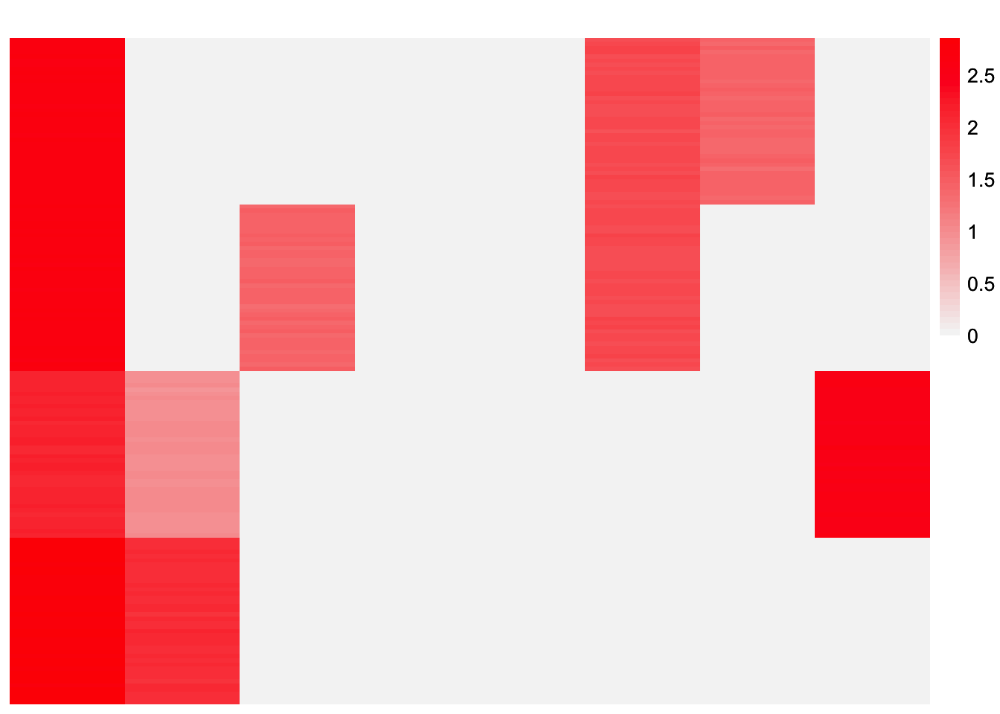
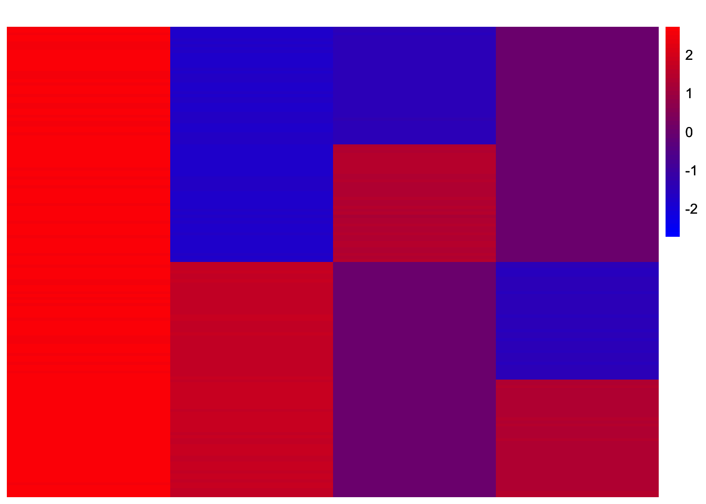
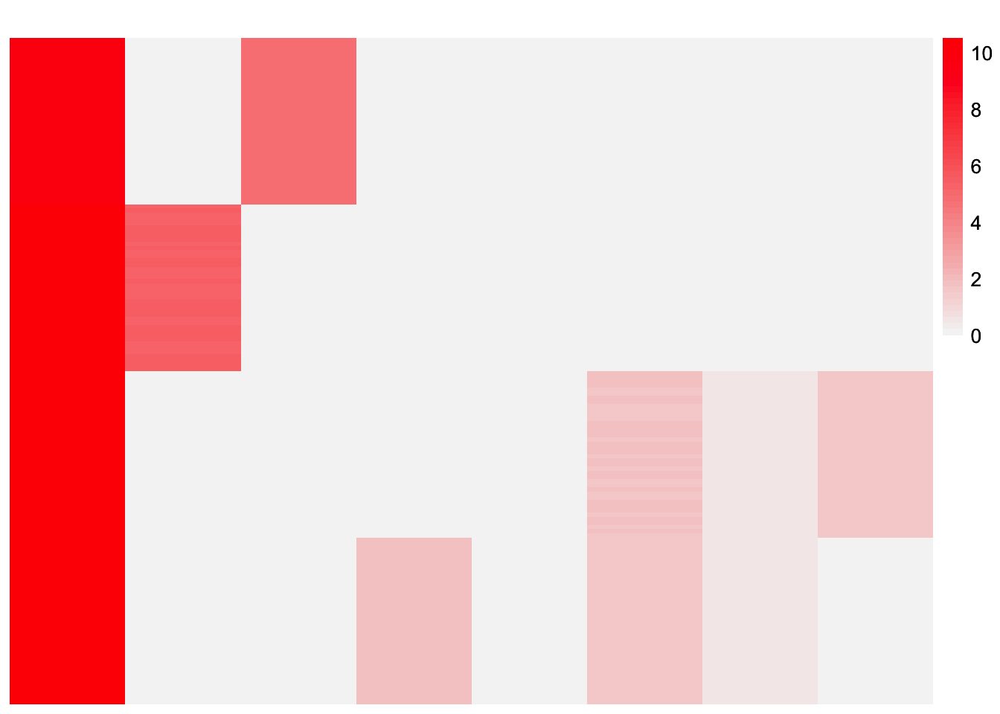

EBCD-divergence-factorization-examples
Annie Xie
2024-06-12
Last updated: 2024-06-17
Checks: 7 0
Knit directory: EBCD_GBCD_comparison/
This reproducible R Markdown analysis was created with workflowr (version 1.7.1). The Checks tab describes the reproducibility checks that were applied when the results were created. The Past versions tab lists the development history.
Great! Since the R Markdown file has been committed to the Git repository, you know the exact version of the code that produced these results.
Great job! The global environment was empty. Objects defined in the global environment can affect the analysis in your R Markdown file in unknown ways. For reproduciblity it’s best to always run the code in an empty environment.
The command set.seed(20240229) was run prior to running
the code in the R Markdown file. Setting a seed ensures that any results
that rely on randomness, e.g. subsampling or permutations, are
reproducible.
Great job! Recording the operating system, R version, and package versions is critical for reproducibility.
Nice! There were no cached chunks for this analysis, so you can be confident that you successfully produced the results during this run.
Great job! Using relative paths to the files within your workflowr project makes it easier to run your code on other machines.
Great! You are using Git for version control. Tracking code development and connecting the code version to the results is critical for reproducibility.
The results in this page were generated with repository version e662250. See the Past versions tab to see a history of the changes made to the R Markdown and HTML files.
Note that you need to be careful to ensure that all relevant files for
the analysis have been committed to Git prior to generating the results
(you can use wflow_publish or
wflow_git_commit). workflowr only checks the R Markdown
file, but you know if there are other scripts or data files that it
depends on. Below is the status of the Git repository when the results
were generated:
Ignored files:
Ignored: .DS_Store
Ignored: .Rhistory
Ignored: code/.DS_Store
Ignored: data/.DS_Store
Note that any generated files, e.g. HTML, png, CSS, etc., are not included in this status report because it is ok for generated content to have uncommitted changes.
These are the previous versions of the repository in which changes were
made to the R Markdown
(analysis/EBCD-divergence-factorization-examples.Rmd) and
HTML (docs/EBCD-divergence-factorization-examples.html)
files. If you’ve configured a remote Git repository (see
?wflow_git_remote), click on the hyperlinks in the table
below to view the files as they were in that past version.
| File | Version | Author | Date | Message |
|---|---|---|---|---|
| Rmd | e662250 | Annie Xie | 2024-06-17 | Add analysis containing more divergence factorization examples |
Introduction
In this analysis, we are interesting in testing EBCD’s ability to recover divergence factorizations (as opposed to drift factorizations). The reason we are interested in divergence factorizations is because theoretically, the divergence factorization is easier to find than the drift factorization. Furthermore, the drift factorization can (sometimes) be easily read off from the divergence factorization. The examples in this analysis are pulled from Jason’s thesis.
Furthermore, for these examples we compare EBCD with flash-Cov (which fits the EBMF-Cov model). We want to assess differences in the solutions of these two methods.
Packages and Functions
library(ggplot2)
library(cowplot)
library(RColorBrewer)
library(ggrepel)
library(pheatmap)
library(gridExtra)
#library(Seurat)
library(Matrix)
library(ebnm)
library(flashier)
library(magrittr)
library(ashr)
library(irlba)
library(reshape2)
library(patchwork)
Attaching package: 'patchwork'The following object is masked from 'package:cowplot':
align_plotslibrary(fastTopics)
#source("~/Documents/PhD 3/Research/EBCD/gbcd-workflow/code/fit_cov_ebnmf.R")plot_heatmap <- function(L, title = "", colors_range = c("gray96", "red"), brks = NULL){
### define the color map
cols <- colorRampPalette(colors_range)(49)
if (is.null(brks) == TRUE){
brks <- seq(min(L), max(L), length=50)
}
plt <- pheatmap(L, show_rownames = FALSE, show_colnames = FALSE, cluster_rows = FALSE, cluster_cols = FALSE, color = cols, breaks = brks, main = title)
return(plt)
}source("~/Documents/PhD 3/Research/EBCD/ebcd_functions.R")#adapted from code used in Jason's thesis
plot_loadings <- function(L_est, Pop){
n <- nrow(L_est)
k <- ncol(L_est)
Idx <- rep(c(1:n), k)
Loading <- c(L_est)
Factor <- paste0('k=',c(sapply(c(1:k), function(x, n){rep(x, n)}, n = n)))
tib <- data.frame(Idx, Loading, Factor, Pop)
plt <- ggplot(tib, aes(x = Idx, y = Loading, col = Pop)) +
geom_point() +
geom_hline(yintercept = 0, linetype = "dashed") +
facet_grid(cols = vars(Factor)) +
theme(axis.title.x = element_blank(),
axis.title.y = element_blank(),
axis.ticks.x = element_blank(),
axis.ticks.y = element_blank(),
axis.text.x = element_blank(),
axis.text.y = element_blank(),
panel.spacing = unit(1, "lines"))
plot(plt)
}Example 1: Balanced Tree
In Example 1, we will simulate data from a balanced tree. Throughout this analysis, we will use the following notation: \(n_A\), \(n_B\), \(n_C\), and \(n_D\) are the sample sizes for the four different populations. \(\sigma_{ABC}^2\), \(\sigma_{AB}^2\), \(\sigma_{CD}^2\), \(\sigma_A^2\), \(\sigma_B^2\), \(\sigma_C^2\), and \(\sigma_D^2\) are the variances of the drift events. \(p\) is the number of genes. \(\sigma_{\epsilon}^2\) is the variance of the noise. We will use the same settings that Jason used in his thesis – \(n_A = n_B = n_C = n_D = 40\), \(\sigma_{ABC}^2 = \sigma_{AB}^2 = \sigma_{CD}^2 = \sigma_A^2 = \sigma_B^2 = \sigma_C^2 = \sigma_D^2 = 2^2\), \(p=1000\), and \(\sigma_{\epsilon}^2 = 1\).
Data Generation
sim_4pops <- function(pop_sizes,
branch_sds,
indiv_sd,
n_genes = 1000,
constrain_F = FALSE,
seed = 666) {
set.seed(seed)
n <- sum(pop_sizes)
p <- n_genes
FF <- matrix(rnorm(7 * p, sd = rep(branch_sds, each = p)), ncol = 7)
if (constrain_F) {
FF_svd <- svd(FF)
FF <- FF_svd$u
FF <- t(t(FF) * branch_sds * sqrt(p))
}
LL <- matrix(0, nrow = n, ncol = 7)
LL[, 1] <- 1
LL[, 2] <- rep(c(1, 1, 0, 0), times = pop_sizes)
LL[, 3] <- rep(c(0, 0, 1, 1), times = pop_sizes)
LL[, 4] <- rep(c(1, 0, 0, 0), times = pop_sizes)
LL[, 5] <- rep(c(0, 1, 0, 0), times = pop_sizes)
LL[, 6] <- rep(c(0, 0, 1, 0), times = pop_sizes)
LL[, 7] <- rep(c(0, 0, 0, 1), times = pop_sizes)
# Only true for trees with no admixture:
divmat <- matrix(nrow = n, ncol = 4)
divmat[, 1] <- LL[, 1]
divmat[, 2] <- LL[, 2] - LL[, 3]
divmat[, 3] <- LL[, 4] - LL[, 5]
divmat[, 4] <- LL[, 6] - LL[, 7]
E <- matrix(rnorm(n * p, sd = indiv_sd), nrow = n)
pops <- rep(LETTERS[1:length(pop_sizes)], times = pop_sizes)
return(list(Y = LL %*% t(FF) + E, LL = LL, FF = FF, divmat = divmat, pops = pops))
}sim_data_4pop <- sim_4pops(pop_sizes = rep(40, 4),
branch_sds = rep(2, 7),
indiv_sd = 1,
n_genes = 1000,
constrain_F = TRUE)This is a heatmap of the loadings matrix, \(L\):
plot_heatmap(sim_data_4pop$LL)
This is a heatmap of \(F^{T}F\):
plot_heatmap(t(sim_data_4pop$FF) %*% sim_data_4pop$FF)
observed.vals1 <- sim_data_4pop$Y %*% t(sim_data_4pop$Y)/ ncol(sim_data_4pop$Y)This is a heatmap of the Gram matrix, \(XX^{T}/p\):
plot_heatmap(observed.vals1)EBCD with point-Laplace prior
Hypothesis
I hypothesize that EBCD will be able to recover the divergence factorization. However, in my experience, EBCD will sometimes jump to sparser solutions that attain a higher objective function value.
Analysis
set.seed(6287)
fit.ebcd1 <- ebcd(X = t(sim_data_4pop$Y), Kmax = 4, maxiter_backfit = 10000, ebnm_fn = ebnm::ebnm_point_laplace)This is a heatmap of the estimate of \(L\), \(\hat{L}\):
max_abs_val <- max(max(fit.ebcd1$EL), abs(min(fit.ebcd1$EL)))
plot_heatmap(fit.ebcd1$EL, colors_range = c('blue','red'), brks = seq(-1*max_abs_val, max_abs_val, length=50))
This is a heatmap of the positive and (absolute value of) the negative parts of \(\hat{L}\) separated out and combined into a single matrix. This is the initialization used in GBCD for the generalized binary model.
plot_heatmap(cbind(pmax(fit.ebcd1$EL,0),pmax(-1*fit.ebcd1$EL,0) ))
This is a scatter plot of the entries of \(\hat{L}\), separated by factor:
plot_loadings(fit.ebcd1$EL, c(rep('A', 40), rep('B', 40), rep('C', 40), rep('D', 40)))
ebcd.laplace.fitted.vals1 <- fit.ebcd1$EL %*% t(fit.ebcd1$EL)This is a plot of \(\hat{L}\hat{L}^{T}\).
plot_heatmap(ebcd.laplace.fitted.vals1)This is the L2 norm of the difference between the observed values and the fitted values.
sum((observed.vals1 - ebcd.laplace.fitted.vals1)^2)[1] 253.8915This is the L2 norm of the difference between the off-diagonal entries of the observed values and fitted values.
sum((observed.vals1 - ebcd.laplace.fitted.vals1)^2) - sum((diag(observed.vals1) - diag(ebcd.laplace.fitted.vals1))^2)[1] 101.5824This is a plot of (a subset of) the off-diagonal entries of the fitted values vs. observed values:
set.seed(3952)
diag_idx <- seq(1, prod(dim(observed.vals1)), length.out = ncol(observed.vals1))
off_diag_idx <- setdiff(c(1:prod(dim(observed.vals1))), diag_idx)
samp.vals <- sample(off_diag_idx, size = 10000)ggplot(data = NULL, aes(x = c(as.matrix(observed.vals1))[samp.vals], y = c(ebcd.laplace.fitted.vals1)[samp.vals])) + geom_point() + xlab('Observed Values') + ylab('Fitted Values') + geom_abline(slope = 1, intercept = 0, color = 'red')
This is a plot of the diagonal entries of the fitted values vs. the diagonal entries of the observed values:
ggplot(data = NULL, aes(x = diag(as.matrix(observed.vals1)), y = diag(ebcd.laplace.fitted.vals1))) + geom_point() + xlab('Observed Values') + ylab('Fitted Values') + geom_abline(slope = 1, intercept = 0, color = 'red')
This is a plot of the progression of the objective function
ggplot(data = NULL, aes(x = c(1:length(fit.ebcd1$vec.obj)), y = fit.ebcd1$vec.obj)) + geom_line()This is the number of iterations that the backfit did before the convergence criterion was satisfied:
length(fit.ebcd1$vec.obj)[1] 10000This is the value of the objective function that was attained:
fit.ebcd1$vec.obj[length(fit.ebcd1$vec.obj)][1] -226901.6Checking Progression of EBCD Solution
To investigate the progression of the EBCD solution, I compute the EBCD solution after only 5000 backfit iterations (compared to 10000 backfit iterations).
set.seed(6287)
fit.ebcd1_niter5000 <- ebcd(X = t(sim_data_4pop$Y), Kmax = 4, maxiter_backfit = 5000, ebnm_fn = ebnm::ebnm_point_laplace)This is a heatmap of the estimate of \(L\), \(\hat{L}\):
max_abs_val <- max(max(fit.ebcd1_niter5000$EL), abs(min(fit.ebcd1_niter5000$EL)))
plot_heatmap(fit.ebcd1_niter5000$EL, colors_range = c('blue','red'), brks = seq(-1*max_abs_val, max_abs_val, length=50))
ebcd.laplace.fitted.vals1_niter5000 <- fit.ebcd1_niter5000$EL %*% t(fit.ebcd1_niter5000$EL)This is the L2 norm of the difference between the observed values and the fitted values.
sum((observed.vals1 - ebcd.laplace.fitted.vals1_niter5000)^2)[1] 217.7909This is the L2 norm of the difference between the off-diagonal entries of the observed values and fitted values.
sum((observed.vals1 - ebcd.laplace.fitted.vals1_niter5000)^2) - sum((diag(observed.vals1) - diag(ebcd.laplace.fitted.vals1_niter5000))^2)[1] 65.39639Observations
The EBCD solution does not resemble the divergence factorization that we are looking for. Factor 4 is more sparse than what we would expect in the divergence factorization. Furthermore, the baseline factor does not have a constant loading across all the samples – there is a block of samples with a lower loading value. In Factor 2, it appears that for the same block of samples, the corresponding loading values are being shrunk towards zero. The EBCD solution still provides a good fit to the data.
Looking at the progression of the objective function, we see that there is a jump towards the end. I checked the EBCD solution after 5000 backfit iterations, and this solution looks more like the divergence factorization we desire. This means that EBCD is able to find another solution that obtains a higher objective function value.
Another interesting observation is the EBCD solution after 5000 backfit iterations has a better fit to the data than the EBCD solution after 10000 backfit iterations.
Given that EBCD finds other solutions that achieve good fits and obtain higher objective function values, I am unsure if the problem is just difficult or if the objective function is not a good one.
EBMF-Cov with point-Laplace prior
For comparison, I want to run flashier with the point-Laplace prior on the loadings on the covariance matrix – I will refer to this as EBMF-Cov with point-Laplace prior. (Note that this is one of the steps in GBCD.)
Hypothesis
I hypothesize the flashier will be able to find the divergence factorization.
Analysis
flash_cov_fit1 <- flash_init(data = observed.vals1, var_type = 0) %>%
flash_greedy(ebnm_fn = ebnm::ebnm_point_laplace, Kmax = 4) %>%
flash_backfit()Adding factor 1 to flash object...
Adding factor 2 to flash object...
Adding factor 3 to flash object...
Adding factor 4 to flash object...
Wrapping up...
Done.
Backfitting 4 factors (tolerance: 3.81e-04)...
Difference between iterations is within 1.0e+04...
Difference between iterations is within 1.0e+03...
Difference between iterations is within 1.0e+02...
Difference between iterations is within 1.0e+01...
Difference between iterations is within 1.0e+00...
Difference between iterations is within 1.0e-01...
Difference between iterations is within 1.0e-02...
Difference between iterations is within 1.0e-03...
Wrapping up...
Done.This is a heatmap of the estimate of \(L\), \(\hat{L}\):
max_abs_val <- max(max(flash_cov_fit1$L_pm), abs(min(flash_cov_fit1$L_pm)))
plot_heatmap(flash_cov_fit1$L_pm, colors_range = c('blue','red'), brks = seq(-1*max_abs_val, max_abs_val, length=50))
This is a heatmap of the positive and (absolute value of) the negative parts of \(\hat{L}\) separated out and combined into a single matrix. This is the initialization used in GBCD for the generalized binary model.
plot_heatmap(cbind(pmax(flash_cov_fit1$L_pm,0),pmax(-1*flash_cov_fit1$L_pm,0) ))
This is a scatter plot of the entries of \(\hat{L}\), separated by factor:
plot_loadings(flash_cov_fit1$L_pm, c(rep('A', 40), rep('B', 40), rep('C', 40), rep('D', 40)))flash.laplace.fitted.vals1 <- flash_cov_fit1$L_pm %*% t(flash_cov_fit1$L_pm)This is a plot of \(\hat{L}\hat{L}^{T}\).
plot_heatmap(flash.laplace.fitted.vals1)
This is the L2 norm of the difference between the observed values and the fitted values.
sum((observed.vals1 - flash.laplace.fitted.vals1)^2)[1] 204.5601This is the L2 norm of the difference between the off-diagonal entries of the observed values and fitted values.
sum((observed.vals1 - flash.laplace.fitted.vals1)^2) - sum((diag(observed.vals1) - diag(flash.laplace.fitted.vals1))^2)[1] 37.3649This is a plot of (a subset of) the off-diagonal entries of the fitted values vs. observed values:
set.seed(3952)
diag_idx <- seq(1, prod(dim(observed.vals1)), length.out = ncol(observed.vals1))
off_diag_idx <- setdiff(c(1:prod(dim(observed.vals1))), diag_idx)
samp.vals <- sample(off_diag_idx, size = 10000)ggplot(data = NULL, aes(x = c(as.matrix(observed.vals1))[samp.vals], y = c(flash.laplace.fitted.vals1)[samp.vals])) + geom_point() + xlab('Observed Values') + ylab('Fitted Values') + geom_abline(slope = 1, intercept = 0, color = 'red')
This is a plot of the diagonal entries of the fitted values vs. the diagonal entries of the observed values:
ggplot(data = NULL, aes(x = diag(as.matrix(observed.vals1)), y = diag(flash.laplace.fitted.vals1))) + geom_point() + xlab('Observed Values') + ylab('Fitted Values') + geom_abline(slope = 1, intercept = 0, color = 'red')This is the value of the objective function that was attained:
flash_cov_fit1$elbo[1] 19301.85Observations
We see that flashier is able to recover a factorization that resembles the desired divergence factorization. The first factor represents a baseline. One thing to note is the baseline has negative loadings and not positive loadings. However, the sign difference doesn’t really matter if you break up the matrix into positive parts and the absolute value of the negative parts. The second factor has a block of positive loadings and a block of negative loadings, corresponding to the AB-CD split. The third factor has a large block of zero loadings, plus a block of positive loadings and a block of negative loadings corresponding to the A-B split. The fourth factor has similar structure, corresponding to the C-D split.
Another observation is the solution from EBMF-Cov has a better fit to the data than the solution from EBCD.
I am unsure why EBMF-Cov recovered the divergence factorization and EBCD did not.
Example 2: Unbalanced Tree
In Example 2, we will simulate data from an unbalanced tree. We will use the following settings – \(n_A = n_B = n_C = n_D = 40\), \(\sigma_{ABC}^2 = 10; \ \sigma_{AB}^2, \sigma_{CD}^2, \sigma_{A}^2, \sigma_B^2, \sigma_C^2, \sigma_D^2 \overset{i.i.d.}{\sim} \text{Unif}[1,6]\), \(p=10000\), and \(\sigma_{\epsilon}^2 = 1\).
Data Generation
#pop_size <- round(runif(4, min = 20, max = 80))
set.seed(2759)
pop_size <- rep(40, 4)
branch_sd <- c(10, runif(6, min = 1, max = 6))
pop_size[1] 40 40 40 40branch_sd[1] 10.000000 1.909695 2.832827 4.215251 5.960734 2.436259 2.371553sim_data2_4pop <- sim_4pops(pop_sizes = pop_size,
branch_sds = branch_sd,
indiv_sd = 1,
n_genes = 10000,
constrain_F = TRUE)This is a heatmap of the loadings matrix, \(L\):
plot_heatmap(sim_data2_4pop$LL)
This is a heatmap of \(F^{T}F\):
plot_heatmap(t(sim_data2_4pop$FF) %*% sim_data2_4pop$FF)
observed.vals2 <- sim_data2_4pop$Y %*% t(sim_data2_4pop$Y)/ ncol(sim_data2_4pop$Y)This is a heatmap of the Gram matrix, \(XX^{T}/p\):
plot_heatmap(observed.vals2)EBCD with point-Laplace prior
Hypothesis
I think EBCD should be able to find the divergence factorization. However, I also think that the imbalance in drift variances might lead to identifiability issues.
Analysis
set.seed(6287)
fit.ebcd2 <- ebcd(X = t(sim_data2_4pop$Y), Kmax = 4, maxiter_backfit = 50000, ebnm_fn = ebnm::ebnm_point_laplace)This is a heatmap of the estimate of \(L\), \(\hat{L}\):
max_abs_val <- max(max(fit.ebcd2$EL), abs(min(fit.ebcd2$EL)))
plot_heatmap(fit.ebcd2$EL, colors_range = c('blue','red'), brks = seq(-1*max_abs_val, max_abs_val, length=50))
This is a heatmap of the positive and (absolute value of) the negative parts of \(\hat{L}\) separated out and combined into a single matrix. This is the initialization used in GBCD for the generalized binary model.
plot_heatmap(cbind(pmax(fit.ebcd2$EL,0),pmax(-1*fit.ebcd2$EL,0) ))This is a scatter plot of the entries of \(\hat{L}\), separated by factor:
plot_loadings(fit.ebcd2$EL, c(rep('A', 40), rep('B', 40), rep('C', 40), rep('D', 40)))
ebcd.laplace.fitted.vals2 <- fit.ebcd2$EL %*% t(fit.ebcd2$EL)This is a plot of \(\hat{L} \hat{L}^{T}\).
plot_heatmap(ebcd.laplace.fitted.vals2)This is the L2 norm of the difference between the observed values and the fitted values.
sum((observed.vals2 - ebcd.laplace.fitted.vals2)^2)[1] 175.3998This is the L2 norm of the difference between the off-diagonal entries of the observed values and fitted values.
sum((observed.vals2 - ebcd.laplace.fitted.vals2)^2) - sum((diag(observed.vals2) - diag(ebcd.laplace.fitted.vals2))^2)[1] 23.31126This is a plot of (a subset of) the off-diagonal entries of the fitted values vs. observed values:
set.seed(3952)
diag_idx <- seq(1, prod(dim(observed.vals2)), length.out = ncol(observed.vals2))
off_diag_idx <- setdiff(c(1:prod(dim(observed.vals2))), diag_idx)
samp.vals <- sample(off_diag_idx, size = 10000)ggplot(data = NULL, aes(x = c(as.matrix(observed.vals2))[samp.vals], y = c(ebcd.laplace.fitted.vals2)[samp.vals])) + geom_point() + xlab('Observed Values') + ylab('Fitted Values') + geom_abline(slope = 1, intercept = 0, color = 'red')This is a plot of the diagonal entries of the fitted values vs. the diagonal entries of the observed values:
ggplot(data = NULL, aes(x = diag(as.matrix(observed.vals2)), y = diag(ebcd.laplace.fitted.vals2))) + geom_point() + xlab('Observed Values') + ylab('Fitted Values') + geom_abline(slope = 1, intercept = 0, color = 'red')This is a plot of the progression of the objective function
ggplot(data = NULL, aes(x = c(1:length(fit.ebcd2$vec.obj)), y = fit.ebcd2$vec.obj)) + geom_line()
This is the number of iterations that the backfit did before the convergence criterion was satisfied:
length(fit.ebcd2$vec.obj)[1] 50000This is the value of the objective function that was attained:
fit.ebcd2$vec.obj[length(fit.ebcd2$vec.obj)][1] -2252959Checking Progression of EBCD Solution
To investigate the progression of the EBCD solution, I compute the EBCD solution after 5000 backfit iterations (compared to 50000 backfit iterations).
set.seed(6287)
fit.ebcd2_niter5000 <- ebcd(X = t(sim_data2_4pop$Y), Kmax = 4, maxiter_backfit = 5000, ebnm_fn = ebnm::ebnm_point_laplace)This is a heatmap of the estimate of \(L\), \(\hat{L}\):
max_abs_val <- max(max(fit.ebcd2_niter5000$EL), abs(min(fit.ebcd2_niter5000$EL)))
plot_heatmap(fit.ebcd2_niter5000$EL, colors_range = c('blue','red'), brks = seq(-1*max_abs_val, max_abs_val, length=50))Observations
I think the EBCD estimate looks sparser than what we would expect from a divergence factorization. For example, in the loadings plot for \(k=2\), we see that the loadings for population A are zero (or are very close to zero) when ideally they should be positive. Furthermore, for \(k=3\), the loadings for population \(B\) are zero when ideally they should be negative. However, for an unbalanced tree, it is difficult to know what the magnitudes of the loadings should be. So it is possible that these loadings are meant to be that small. But based off of what I read in Jason’s thesis, I’m leaning towards the conclusion that the estimate is sparser than we desire.
EBMF-Cov with point-Laplace prior
Again, I want to compare the results of EBCD with the point-Laplace prior with the results of EBMF-Cov with the point-Laplace prior.
Hypothesis
I hypothesize that EBMF-Cov should be able to find solution that looks like a divergence factorization.
Analysis
flash_cov_fit2 <- flash_init(data = observed.vals2, var_type = 0) %>%
flash_greedy(ebnm_fn = ebnm::ebnm_point_laplace, Kmax = 4) %>%
flash_backfit()Adding factor 1 to flash object...
Adding factor 2 to flash object...
Adding factor 3 to flash object...
Adding factor 4 to flash object...
Wrapping up...
Done.
Backfitting 4 factors (tolerance: 3.81e-04)...
Difference between iterations is within 1.0e+04...
Difference between iterations is within 1.0e+03...
Difference between iterations is within 1.0e+02...
Difference between iterations is within 1.0e+01...
Difference between iterations is within 1.0e+00...
Difference between iterations is within 1.0e-01...
Difference between iterations is within 1.0e-02...
Difference between iterations is within 1.0e-03...
Wrapping up...
Done.This is a heatmap of the estimate of \(L\), \(\hat{L}\):
max_abs_val <- max(max(flash_cov_fit2$L_pm), abs(min(flash_cov_fit2$L_pm)))
plot_heatmap(flash_cov_fit2$L_pm, colors_range = c('blue','red'), brks = seq(-1*max_abs_val, max_abs_val, length=50))
This is a heatmap of the positive and (absolute value of) the negative parts of \(\hat{L}\) separated out and combined into a single matrix. This is the initialization used in GBCD for the generalized binary model.
plot_heatmap(cbind(pmax(flash_cov_fit2$L_pm,0),pmax(-1*flash_cov_fit2$L_pm,0) ))
This is a scatter plot of the entries of \(\hat{L}\), separated by factor:
plot_loadings(flash_cov_fit2$L_pm, c(rep('A', 40), rep('B', 40), rep('C', 40), rep('D', 40)))flash.laplace.fitted.vals2 <- flash_cov_fit2$L_pm %*% t(flash_cov_fit2$L_pm)This is a plot of \(\hat{L} \hat{L}^{T}\).
plot_heatmap(flash.laplace.fitted.vals2)
This is the L2 norm of the difference between the observed values and the fitted values.
sum((observed.vals2 - flash.laplace.fitted.vals2)^2)[1] 46488.65This is the L2 norm of the difference between the off-diagonal entries of the observed values and fitted values.
sum((observed.vals2 - flash.laplace.fitted.vals2)^2) - sum((diag(observed.vals2) - diag(flash.laplace.fitted.vals2))^2)[1] 45868.31This is a plot of (a subset of) the off-diagonal entries of the fitted values vs. observed values:
set.seed(3952)
diag_idx <- seq(1, prod(dim(observed.vals2)), length.out = ncol(observed.vals2))
off_diag_idx <- setdiff(c(1:prod(dim(observed.vals2))), diag_idx)
samp.vals <- sample(off_diag_idx, size = 10000)ggplot(data = NULL, aes(x = c(as.matrix(observed.vals2))[samp.vals], y = c(flash.laplace.fitted.vals2)[samp.vals])) + geom_point() + xlab('Observed Values') + ylab('Fitted Values') + geom_abline(slope = 1, intercept = 0, color = 'red')
This is a plot of the diagonal entries of the fitted values vs. the diagonal entries of the observed values:
ggplot(data = NULL, aes(x = diag(as.matrix(observed.vals2)), y = diag(flash.laplace.fitted.vals2))) + geom_point() + xlab('Observed Values') + ylab('Fitted Values') + geom_abline(slope = 1, intercept = 0, color = 'red')This is the value of the objective function that was attained:
flash_cov_fit2$elbo[1] 19342.42Observations
In this case, EBMF-Cov’s estimate for factors 2-4 is similar to the estimate from EBCD (for factors 2-4). One difference is the baseline estimate for EBCD has all positive loadings while the baseline estimate for EBMF-Cov has all negative loadings. To me, the loadings estimate looks similar to the loadings estimate Jason had from using EBMF with the divergence priors.
Another observation is that the EBMF-Cov estimates didn’t fit the data very well. They fit much worse than EBCD in this setting. In the plot of the fitted vs. observed values of the off-diagonal entries, we see that many of the points do not lie on the \(y=x\) line.
Given that both methods struggled to find an interpretable divergence factorization in this setting, I think this example problem may be difficult to solve.
sessionInfo()R version 4.3.2 (2023-10-31)
Platform: aarch64-apple-darwin20 (64-bit)
Running under: macOS Sonoma 14.4.1
Matrix products: default
BLAS: /Library/Frameworks/R.framework/Versions/4.3-arm64/Resources/lib/libRblas.0.dylib
LAPACK: /Library/Frameworks/R.framework/Versions/4.3-arm64/Resources/lib/libRlapack.dylib; LAPACK version 3.11.0
locale:
[1] en_US.UTF-8/en_US.UTF-8/en_US.UTF-8/C/en_US.UTF-8/en_US.UTF-8
time zone: America/New_York
tzcode source: internal
attached base packages:
[1] stats graphics grDevices utils datasets methods base
other attached packages:
[1] fastTopics_0.6-142 patchwork_1.2.0 reshape2_1.4.4 irlba_2.3.5.1
[5] ashr_2.2-66 magrittr_2.0.3 flashier_1.0.53 ebnm_1.1-27
[9] Matrix_1.6-5 gridExtra_2.3 pheatmap_1.0.12 ggrepel_0.9.5
[13] RColorBrewer_1.1-3 cowplot_1.1.3 ggplot2_3.5.1 workflowr_1.7.1
loaded via a namespace (and not attached):
[1] pbapply_1.7-2 rlang_1.1.3 git2r_0.33.0
[4] horseshoe_0.2.0 compiler_4.3.2 getPass_0.2-4
[7] callr_3.7.6 vctrs_0.6.5 quantreg_5.97
[10] quadprog_1.5-8 stringr_1.5.1 pkgconfig_2.0.3
[13] crayon_1.5.2 fastmap_1.2.0 mcmc_0.9-8
[16] labeling_0.4.3 utf8_1.2.4 promises_1.3.0
[19] rmarkdown_2.27 ps_1.7.6 MatrixModels_0.5-3
[22] purrr_1.0.2 xfun_0.44 cachem_1.1.0
[25] trust_0.1-8 jsonlite_1.8.8 progress_1.2.3
[28] highr_0.11 later_1.3.2 parallel_4.3.2
[31] prettyunits_1.2.0 R6_2.5.1 bslib_0.7.0
[34] stringi_1.8.4 SQUAREM_2021.1 jquerylib_0.1.4
[37] Rcpp_1.0.12 knitr_1.45 httpuv_1.6.15
[40] splines_4.3.2 tidyselect_1.2.1 rstudioapi_0.16.0
[43] yaml_2.3.8 processx_3.8.4 plyr_1.8.9
[46] lattice_0.22-6 tibble_3.2.1 withr_3.0.0
[49] coda_0.19-4.1 evaluate_0.23 Rtsne_0.17
[52] survival_3.6-4 RcppParallel_5.1.7 pillar_1.9.0
[55] whisker_0.4.1 plotly_4.10.4 softImpute_1.4-1
[58] generics_0.1.3 rprojroot_2.0.4 invgamma_1.1
[61] truncnorm_1.0-9 hms_1.1.3 munsell_0.5.1
[64] scales_1.3.0 glue_1.7.0 scatterplot3d_0.3-44
[67] lazyeval_0.2.2 tools_4.3.2 data.table_1.15.4
[70] SparseM_1.81 fs_1.6.4 grid_4.3.2
[73] tidyr_1.3.1 MCMCpack_1.7-0 colorspace_2.1-0
[76] deconvolveR_1.2-1 cli_3.6.2 Polychrome_1.5.1
[79] fansi_1.0.6 mixsqp_0.3-54 viridisLite_0.4.2
[82] dplyr_1.1.4 uwot_0.1.16 gtable_0.3.5
[85] sass_0.4.9 digest_0.6.35 farver_2.1.2
[88] htmlwidgets_1.6.4 htmltools_0.5.8.1 lifecycle_1.0.4
[91] httr_1.4.7 MASS_7.3-60.0.1